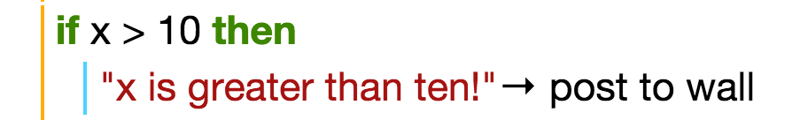
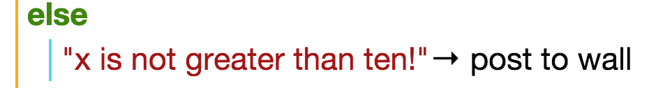
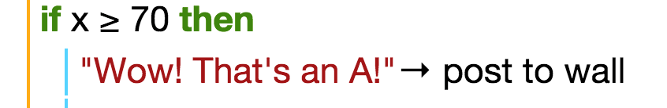
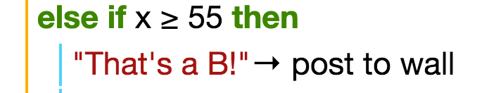
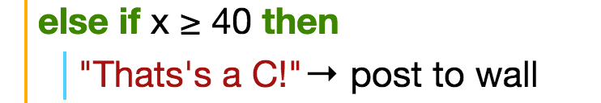

Final Project
This tutorial will teach you about using if and else if statements.
Interactive Lesson for 'if': Click Here
Interactive Lesson for 'else': Click Here
If Statement
The way that 'IF statements' works, is that it will take a value and see if it fulfills a condition that is chosen and gives the result if it does.
IMPORTANT: The order of the conditions that we use in IF statements are very important. The program will test the conditions in the order that is written, so we must test the more restrictive conditions first.
To use 'if statements', firstly, we should enter a value that we want the statement to evaluate. For example, we can assign a variable to equal 15.
Example pdf link (target="_blank" means new tab)Next, we will enter the IF statement; lets make the IF statement tell us whether or not the number is greater than 10. We can do it like this:
The line of code that is indented and the line below the IF statement tells the program what to do if the condition fulfilled. In this case, when the program is run, the text, "X is greater than 10!" will be posted to the wall.
That's all well and good, but what if our number was less than or equal to ten? We can then use the second part of the IF statement syntax, called 'else'. This covers all the cases where the IF statement is not fulfilled.
In TouchDevelop, the ELSE statement is automatically included, and the default code is to 'do nothing'. For our example, you can add to the code, so that it posts to the wall saying "x is not greater than 10!" like this:
And there we have it, if statements in a nutshell!
Else If
There is also an additional function that can be used alongside IF statements f you want to have more than one condition to test.
The way that ELSE IF statements are used are similar to IF statements that you have learnt already. The only thing that is different is that ELSE IF statements come after the first IF, to test more conditions.
Let's go through an example to make this clearer. We will write a program that asks the user to input a mark for a test, and the program will post to the wall, the grade that the user inputted.
The grades are as follows: A - 70 and above, B - 55 and above, C - 40 and above, Fail - below 40.
First we need to create the variable to store the mark that the user inputs.
We then create the first IF statement as follows:
Because we need other conditions for the rest of the grades, this is where ELSE IF comes in. It is used in the same format as IF, but with the word ELSE included. For the grade B condition, this is how we would implement it:
We can use the ELSE IF statements for the rest of the program as follows:
And for the last statement, you do not need an ELSE IF, you can simply use the ELSE statement, as it will cover the rest of the conditions.
That is the basic concept of using IF and ELSE IF statements!
Do the exercises to practice using what you have learnt!